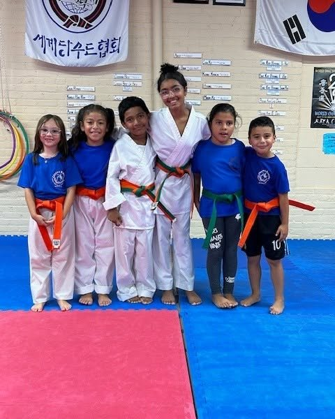
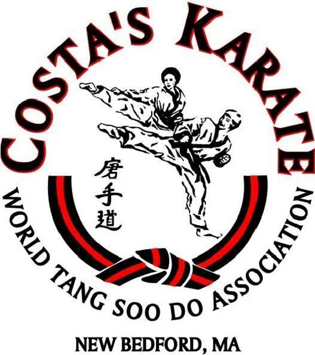
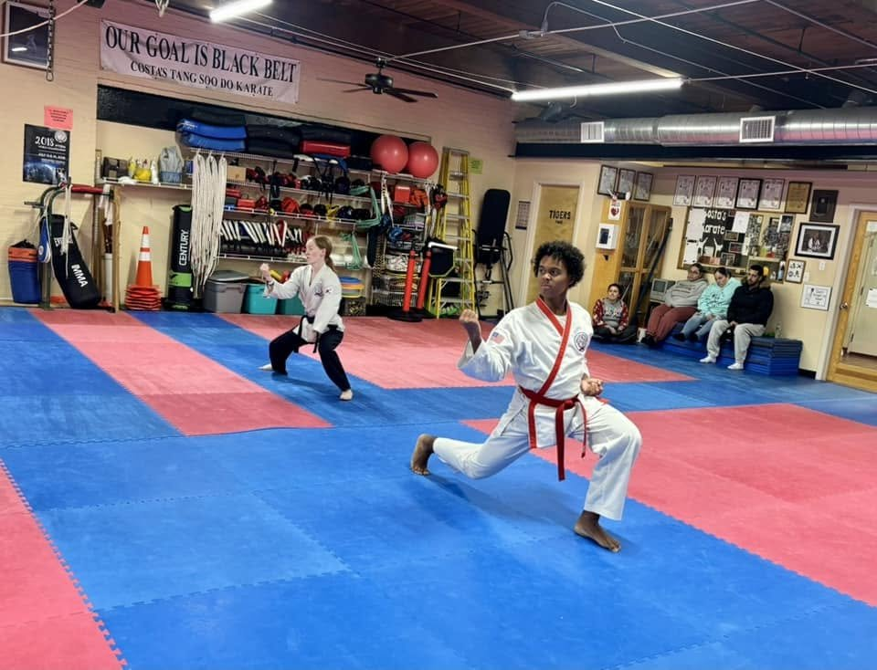
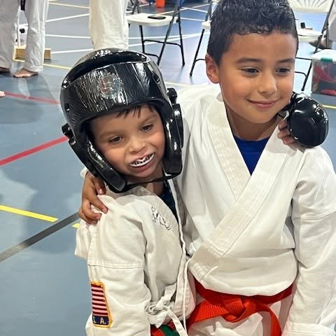
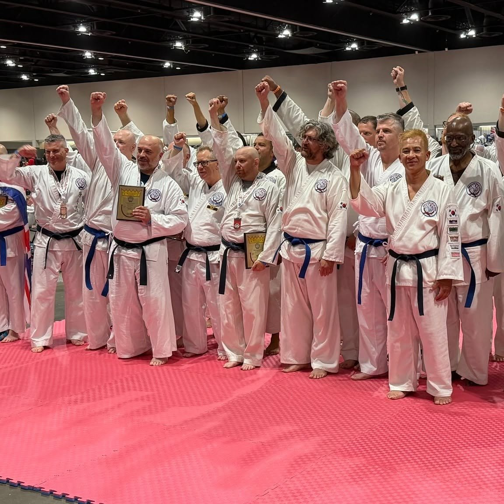
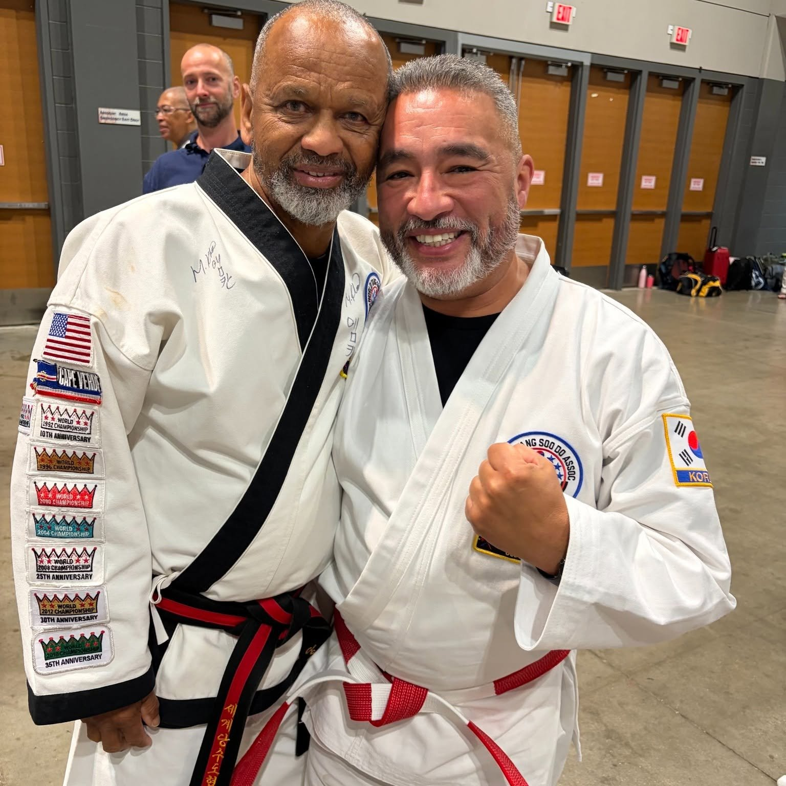

01 / FOUNDATIONBUILD THE BASICS
BEGINNERS
Learn fundamentals, develop coordination, and discover confidence through consistent practice.

COSTA'STANG SOO DO KARATEGET STARTED
Real confidence. Lifelong character. Traditional Tang Soo Do taught with purpose, community, and respect.
OUR WAY · THE WAY OF THE HAND
A school where every student has room to become something more.
At Costa's Tang Soo Do Karate, martial arts is about more than learning to kick, block, or earn a new rank. It is about the confidence to try, the patience to improve, and the respect we carry beyond the training floor.
Whether you're stepping onto the mat for the first time or continuing years of practice, there is a place for you in the dojang.

01 / FOUNDATIONBUILD THE BASICS

02 / PROGRESSIONKEEP MOVING FORWARD

03 / COMMUNITYCONFIDENCE TOGETHER
Classes have been listed for Monday, Tuesday, Wednesday, Thursday and Saturday. Contact the school to confirm current times and placement.

THE BELT IS A
MILESTONE.
THE PERSON
IS THE POINT.

MASTER JOHN COSTA / INSTRUCTOR LEADERSHIPMEET YOUR INSTRUCTOR
INSTRUCTION · MENTORSHIP · LEGACY
Master John Costa brings experience, mentorship, and a deep respect for the tradition of Tang Soo Do to the New Bedford community.
His approach emphasizes building character alongside skill, creating an environment where students can learn, challenge themselves, and support one another.
TRAIN WITH US ↗From practice to competition and shared milestones, these are the moments that make Costa's more than a place to train.
Curious about classes? Tell us a little about yourself or your student. We’ll help you take the next step.
ASK ABOUT CLASSES ↗THE NEXT STEP IS YOURS
Fill out the form and send your inquiry directly to our school. We’ll follow up about classes, schedules, and your next steps.
376 Nash Road
New Bedford, MA 02746